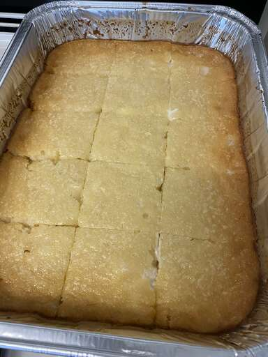

Cassava Cake

Description
This cassava cake is a Pinoy dessert best served cold. It is easy to make if you are looking for a Filipino dessert.
Ingredients
- 2 cups grated, peeled yuca
- 1 (14 ounce) can coconut milk
- 1 (14 ounce) can sweetened condensed milk
- 1 (12 ounce) can evaporated milk
- 2 large eggs, beaten
Steps
- Gather all ingredients. Preheat the oven to 350 degrees F (175 degrees C).
- Stir yuca, coconut milk, condensed milk, evaporated milk, and eggs together in a bowl until thoroughly combined.
- Pour into a 2-quart baking dish.
- Bake in the preheated oven until set, about 1 hour. Turn the broiler on and bake until top of cake is browned, 2 to 3 minutes. Cool completely in the refrigerator before serving, about 1 hour.